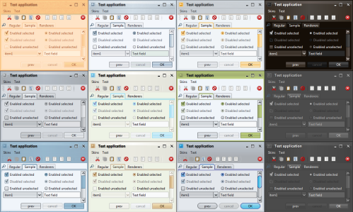

|
|
Performance improvements |
The main emphasis of version 5.0 is on addressing the performance issues
and bringing Substance in line with other core and third-party look-and-feels.
The LightBeam testbed is used to
run the performance tests on different static and dynamic scenarios.
For static scenarios (continuous repaint of the same content to
an offscreen image) Substance 5.0 is on average 3.5 times faster than
Substance 4.3. For dynamic scenarios (interacting with the content and
measuring the both the interaction time and the repaint time), Substance 5.0
is on average 2.7 times fatser than Substance 4.3.
The full numbers are available for:
- Reports on static
and dynamic scenarios of Substance 5.0 against other core and third-party
look-and-feels.
- Reports on static
and dynamic scenarios of various Substance 5.0 skins.
|
|
|
Runtime requirements |
JRE 6.0 is the new minimum runtime requirement for the
Substance library.
|
|
|
Per-window skins |
When the new
SKIN_PROPERTY
client property is installed on a specific
root pane, all controls and areas in that window will use the
specified skin.
The screenshot below shows one application with twelve top-level frames.
Each frame has this client property set to a different skin.

|
|
|
Enhanced theming layer |
Reworked notion of themes. Split the functionality of themes,
complex themes and skins into
color schemes,
color scheme bundles,
skins.
Tweaked most of the core skins to take advantage of the new more
flexible and straighforward APIs.
|
|
|
Removed pluggable text rasterizers |
Removed support for pluggable text rasterizers
(Bramble plugin
based on SWT).
Applications running on Windows Vista are highly encouraged to use
JDK 6u10 and its native text rasterizer that addresses poor
rendering of the default Segoe UI font.
|
|
|
Removed the default Aqua look |
The org.jvnet.substance.SubstanceLookAndFeel
is now abstract and doesn't have any public constructors. Applications that used
this class (either instantiating the class itself or with
-Dswing.defaultlaf VM flag)
can:
Applications that wish to obtain the old default Aqua look-and-feel
can use the
org.jvnet.substance.SubstanceLegacyDefaultLookAndFeel
class. This is for legacy support only and will be removed in future releases.
|
|
|
VM flags |
The only two supported VM flags are:
-Dsubstancelaf.heapStatusTraceFile.
Controls the presence of heap status panels on decorated title panes
and optional logfile name for tracking the heap status.-Dsubstancelaf.traceFile.
Controls the tracing mode that records allocation of large
images and image cache sizes to pinpoint memory problems.
The following VM flags have been removed in release 5.0:
substancelaf.configFilesubstancelaf.borderPainter,
substancelaf.gradientPainter,
substancelaf.theme,
substancelaf.buttonShaper,
substancelaf.titlePainter,
substancelaf.watermark.
Use the SubstanceSkin
APIs to create a custom skin.substancelaf.debugUiMode -
use the tools plugin (see below).substancelaf.enableInvertedThemes,
substancelaf.enableNegatedThemessubstancelaf.noExtraElementssubstancelaf.watermark.image.kind,
substancelaf.watermark.image.opacity,
substancelaf.watermark.image.
Use the SubstanceImageWatermark APIs.substancelaf.watermark.tobleedsubstancelaf.useDecorations.
Use JFrame.setDefaultLookAndFeelDecorated(true) and
JDialog.setDefaultLookAndFeelDecorated(true) APIs.
|
|
|
Client properties |
The following client properties specified in
org.jvnet.substance.SubstanceLookAndFeel
have been modified / renamed:
COLORIZATION_FACTOR -
the colorization is on by default with value of 50%. To remove colorization,
set the client property value to 0.0.NO_EXTRA_ELEMENTS has been replaced by
SHOW_EXTRA_WIDGETS.
The new default mode does not add any extra UI elements (menu search, lock icons etc).WATERMARK_IGNORE and
WATERMARK_TO_BLEED have been replaced by
WATERMARK_VISIBLE.
Trees, tables, lists and text components don't show watermark unless the new
client property is explicitly set to Boolean.TRUE .
The following client properties specified in
org.jvnet.substance.SubstanceLookAndFeel
have been removed:
BACKGROUND_COMPOSITE,
OVERLAY_PROPERTY.BORDER_PAINTER_PROPERTY,
GRADIENT_PAINTER_PROPERTY,
THEME_PROPERTY,
TITLE_PAINTER_PROPERTY.
Use the SubstanceSkin
APIs to create a custom skin and
COLORIZATION_FACTOR
for colorizing components.ENABLE_INVERTED_THEMES,
ENABLE_NEGATED_THEMES.GRIP_PAINTER.PAINT_ACTIVE_PROPERTY.TABBED_PANE_VERTICAL_ORIENTATION,
TABBED_PANE_VERTICAL_ORIENTATION_ROTATE_ICONS.
Left / right tabs are always rotated.WATERMARK_IMAGE_KIND,
WATERMARK_IMAGE_OPACITY,
WATERMARK_IMAGE_PROPERTY.
Use the SubstanceImageWatermark APIs.
|
|
|
APIs |
The following APIs have been added to the
org.jvnet.substance.SubstanceLookAndFeel
class:
The following APIs have been removed from the
org.jvnet.substance.SubstanceLookAndFeel
class:
addMixedTheme,
addMixedThemeBy,
hasMixedThemes,
removeMixedTheme,
removeMixedThemeBy along with
SubstanceMixTheme and
SubstanceMixBiTheme.getActiveColorScheme,
getDefaultColorScheme,
getDisabledColorScheme.getBackgroundComposite,
setBackgroundComposite.getCurrent*,
getCurrent*Name,
setCurrent*,
register*ChangeListener,
unregister*ChangeListener,
getAll*s
for border painters, button shapers, gradient painters, themes and
watermarks. To get the current settings, use
getCurrentSkin(Component)
and
SubstanceSkin
APIs. To change the current settings, create a custom skin and use
setSkin(SubstanceSkin)
or
setSkin(String)
APIs.getImageWatermarkKind,
getImageWatermarkOpacity,
setImageWatermarkKind,
setImageWatermarkOpacity - use
getCurrentSkin(Component),
SubstanceSkin.getWatermark() and
SubstanceImageWatermark
APIs.hideMenuSearchPanels,
showMenuSearchPanels - use
setWidgetVisible(SubstanceWidgetType.MENU_SEARCH).permanentlyHideHeapStatusPanel,
permanentlyShowHeapStatusPanel - use
setWidgetVisible(SubstanceWidgetType.TITLE_PANE_HEAP_STATUS).toBleedWatermark.toEnableInvertedThemes,
toEnableNegatedThemes.ignoreAnimationsOnClass,
toIgnoreAnimation - use
FadeConfigurationManager
APIs.toShowExtraElements.
|
|
|
Combobox auto completion |
The combobox auto completion previously available from the
laf-widget project
has been discontinued. Use SwingX, GlazedLists or JIDE functionality -
see the overview
article comparing the different approaches.
|
|
|
New tools plugin |
The new substance-tools.jar
plugin is part of the officially available binaries. When this jar
is added to the application classpath, the following additional
UI functionality is available:
- Title panes of decorated windows have a right-click
context menu that allows simulating
color-blind mode,
changing animation rate and focus kind, dumping the component
hierarchy, toggling component orientation between LTR and RTL, using
themed icons,
installing ghost
debug mode and showing image cache statistics.
- Scroll bars have a right-click context menu that allows
changing the button
policy kind.
|
|
|
New extras plugin |
The new Extras plugin
consolidated the existing theme pack, button shaper pack and watermark pack
under one roof. It provides:
- Additional twenty one color schemes.
- Additional twelve watermarks.
- Additional five skins.
- Additional eight button shapers.
- Support for mixed color schemes and mixed gradient painters.
|